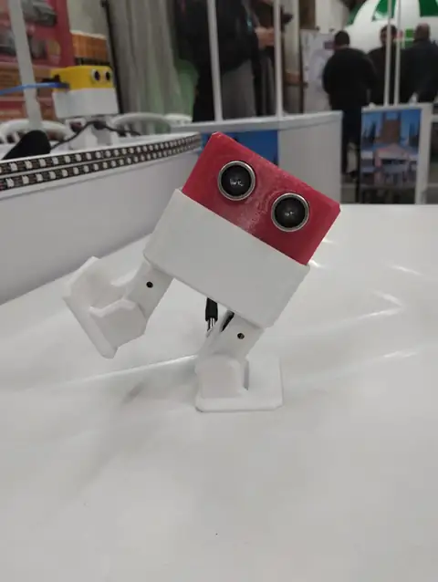
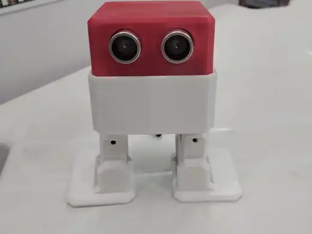

 Robótica — 3ª série de SistemasRegistro do protótipo vermelho durante teste de inclinação.
 Projeto da 3ª série de SistemasVista frontal do robô utilizado nas atividades de robótica e programação.